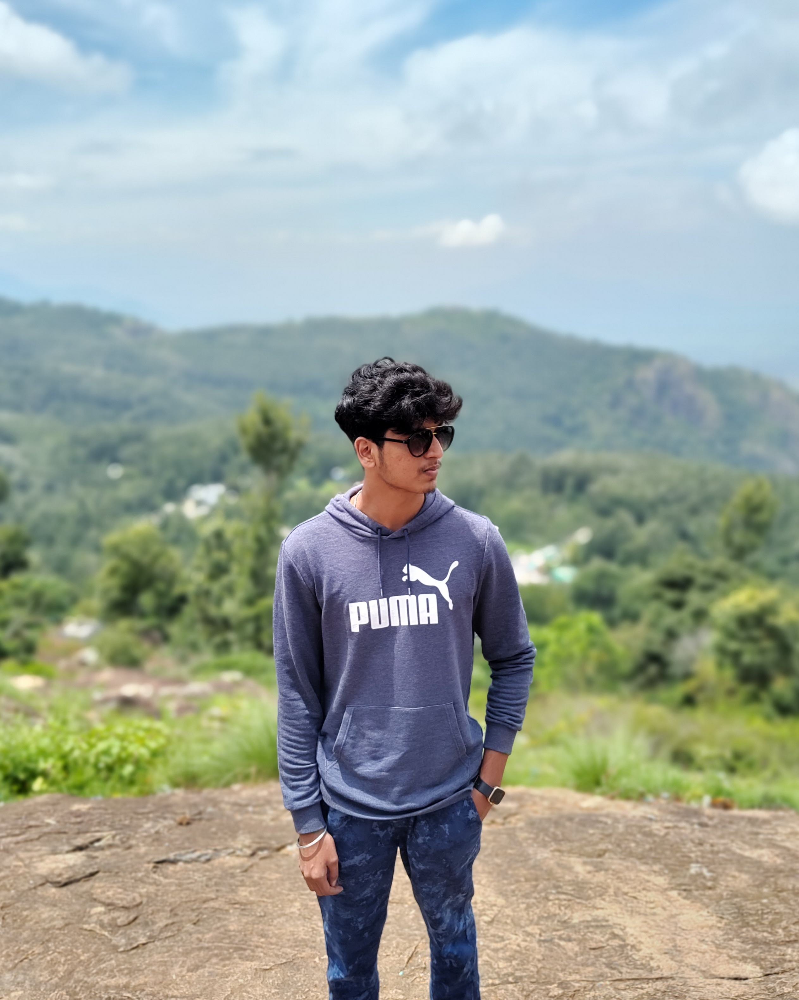

| 
|
Tarun
Iam a student at SRM University
BTECH . ECE
|
Summary
As a committed Electronics and Communication engineering graduate, I am enthusiastic to advance my knowledge in computing and create a positive impact in society by bridging the gap between technology and addressing global challenges through innovative solutions.
Education
- Shree Niketan Patasala (2013-2018)
- Maharishi International Residential School (2020-2024)
Work Experience
-
Magal Engg. Tech, India
Dec 2022- Jan 2023
-
Exposure to the integration of Electronics and Software systems within the Automotive sector and developed a strong
understanding of system applications.
-
Acquired valuable insights into the practical aspects of manufacturing processes of Automobile Assemblies.
-
Gained industrial experience in the configuration of automotive microcontrollers and sensors.
-
BSNL, Chennai
Nov 2022
-
It was a one-day industrial visit, where I explored operations of real-world applications in telecommunication instruments and network operations.
-
Conducted experiments with radio frequency communication systems that strengthened my understanding of modulation techniques and signal processing.
Skills
- React.js: ⭐️⭐️⭐️⭐️
- HTML , CSS and JavaScript: ⭐️⭐️⭐️⭐️⭐️
- Node.js and Express.js: ⭐️⭐️⭐️
Certifications
- NPTEL Programming Data Structures and Algorithms using Python
- The Complete 2023 Web Development Bootcamp by Dr Angela Yu (Udemy)
- The Complete Data Structures and Algorithms Course in Python (Udemy)
- Programming Fundamentals by Duke University (Coursera)
- Master Class on Full Stack Web Development (Perfect eLearning)
- Free JavaScript Programming Essentials Bootcamp (Lets Upgrade)
Other